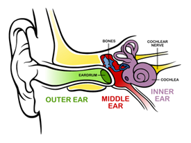
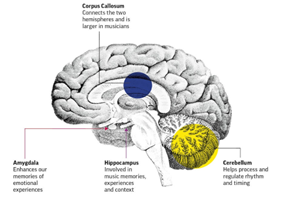

Music and the Brain: How Music Activates the Brain and Stimulates Plasticity#
By Kristina Kellogg
How the brain processes sound and musical components:#
Music is a powerful tool used to evoke and express human emotions. Music not only evokes emotions, but thoughts, memories, and even influences human behavior. How does music affect our brain? How are musical sounds processed and how do we respond to these sounds?
 Figure 1: Anatomical structure of the ear.
Music processing begins at the ear. Sound waves enter the ear and strike the eardrum. The sound waves cause the eardrum and three small bones in the ear to vibrate , and these vibrations are passed to the inner ear (McCollum). The vibrations enter the inner ear, which contains a very important fluid-filled cochlea. The cochlea contains thousands of “tiny hair cells” which react to the different tones and pitches of the sound (McCollum). The inner ear translates the vibrations into electrical signals, and these electrical signals are sent to the brain via the cochlear nerve system (McCollum). These signals pass through the auditory cortex, which is located in the temporal lobe, but these signals are not only processed in one region in the brain, rather the entire brain takes part in the process. There are many components that add together to create a musical piece, such as rhythm and pitch and these components are not all processed in the same area of the brain.
The belt and parabelt, a part of the auditory cortex, of the right side of the brain determines the rhythm of a song. Rhythm processing has also been found to occur in the basal ganglia. The basal ganglia typically is responsible for motor movements, so hearing a song may result in the tapping of a foot to try and recreate the beat of the song. One of the structures within the basal ganglia plays an important role in the processing of rhythm, the putamen. The putamen is a round structure found in the center of the brain and studies have shown that thai structure is active with the presence of a beat (Kirkham). A review by Elizabeth Kirkham dives into the function of the putamen and references studies conducted to determine the putamen’s role in rhythm processing. Kirkham cites a study performed by Grahn and Rowe who investigated how the putamen responded to rhythm. They found that the putamen responded differently to different beats and was inactive when no beat was being played (Kirkham). They also found that when listening to a new beat, the putamen was inactive, but hearing the new beat for a second time showed a highly active putamen (Kirkham). This supports the theory about the putamen and its role in music processing. The putamen processes the continuation of a beat and is important for the mental generation of a beat (Kirkham).
Music is not processed in only one area of the brain, for example, pitch is not processed in the exact same area as rhythm. Pitch is processed in the auditory brainstem, and this processed information feeds into the cortical architecture to generate and control the perception of music (Bidelman). The auditory brainstem processes musically relevant parts of pitch, including consonance and dissonance. Consonant pitch relationships are usually described as pleasant and beautiful, whereas dissonant pitch relationships are described as the opposite, harsh and unpleasant (Bidelman). Listeners typically prefer consonant pitch relationships which suggests that musical pitch processing is hierarchical (Bidelman). Cortical activity is sensitive to pitch relationships, consonance vs dissonance, and is one of the other regions that helps break down and process pitch (Bidelman). In addition to cortical processing, subcortical processing also appears to be sensitive to pitch relationships. Subcortical processing in the brainstem reveals that consonant relationships produce a stronger neural pitch salience and based on a person’s underlying subcortical response, can predict musical preferences (Bidelman).
 Figure 2: Picture of the brain that depicts important regions associated with music processing.
The hippocampus and amygdala play an important role in how we respond to music. The hippocampus forms long-term memories and is involved in memory retrieval, and is also the site where most memories are stored (A crash course on how your Brain Processes Music). Since music evokes particular emotions, the hippocampus is able to retrieve memories from music because some music can be associated with certain emotions (A crash course on how your Brain Processes Music). Moving on to the amygdala, this region of the brain has an important job of processing our emotions. The amygdala assigns or triggers an emotional response depending on the stimuli it receives. If you listen to an upbeat song everytime your sports team wins, you may feel excited or happy. This is the emotional response that your amygdala assigns to hearing that song or musical piece and a release of dopamine will follow. The hypothalamus is another part of the brain that deals with how music is processed. The main role of the hypothalamus is to regulate body temperature, feelings of hunger and thirst, as well as mood and blood pressure. To regulate these functions the hypothalamus produces releasing or inhibiting hormones, for example listening to calm music can cause the hypothalamus to reduce heart rate and blood pressure (How does the Brain Process Music?).
Note
Music as a Universal Language
Music is a universal human phenomenon, but its forms and functions vary widely across cultures and contexts. There are common elements of a song that make such a song recognizable. How do listeners from different areas of the world perceive and interpret the musical components that convey emotions? Music can connect us in ways that we are unaware of. Think back to your childhood. What lullabies do you remember being sung to you? Mothers across different countries and continents soothe their children with different lullabies. The words and tempo to these simple songs may be different, but they all have the same purpose: to soothe and communicate love to their children. Music acts as a universal tool to convey emotions and to communicate emotions as well.
The tempo of a song, the way lyrics are conveyed, and the frequency of a musical piece come together to communicate some sort of message. A song that features a slow tempo and a low-frequency may evoke sad or negative emotions from the listener. Are people able to recognize and detect the intended emotion of a song when they are unfamiliar with the language or culture of the song? A study conducted by Mehr et al. asked a question similar to this: does vocal music exhibit a form-function relationship that is detectable by listeners that come from different backgrounds? The researchers investigated whether participants could accurately depict the function and form of a song. The function of a song refers to what is the purpose or emotion this song is trying to evoke, and the form of a song refers to the features of a song used to identify the function. The objective of the first experiment was to determine if people from different cultural backgrounds could accurately depict the function of a song. The discography curated was composed of music from different cultural backgrounds that represented a common social function: love, healing, lullaby, and dance (Mehr et al.). Participants were able to correctly identify the function of the song in regards to “dance” songs and lullabies. Now that the researchers have established that people from various backgrounds can depict the function of a song from different areas of the world, they moved on to a second group of participants and another question. The second experiment asked participants five questions randomly chosen from a set of ten questions. Examples of these questions include: number of singers, number of instruments used, tempo, and pleasantness. Detecting the function of a song is based on contextual and musical features of song forms (Mehr et al.). Regularities in music from different places around the world make music recognizable to other cultures, while still maintaining its originality and variability (Mehr et al.).
The results demonstrate the regularities of music across cultures, but also raises some questions. Does having access to the internet make it easier to correctly identify the form-function of a song? Or are frequencies and tempos easily detectable to the human brain? Music is a powerful form of media used to emit strong emotions. Humans can recognize aspects of a song, such as rhythm or tone, and pick out the type of emotion that a song intends to elicit, even when a song originates from a different culture or is a language unfamiliar to the listener.
Music and distraction:#
Attention span refers to the duration of sustained focus on a specific task or activity. It is a vital cognitive skill that facilitates learning, studying, and accomplishing significant objectives. Various factors can influence attention span, such as motivation levels, mood, and music. Music, as a form of auditory stimulation, can have different effects on attention span depending on the individual.
Numerous studies have been conducted that have claimed positive or negative effects when using music to help study or concentrate on a particular task. One study looked at whether different types of music affected the concentration of Taiwanese students that attended a two-year technical college. The study included two experimental groups and one control group. The two experimental groups consisted of participants either listening to hip hop music or classical music, while the control group had no background music. Participants were asked to read three reading passages and answer ten questions at the end of each passage. This study concluded that the type of background music can affect concentration and the way people perform a cognitive task (Chou). Out of the three groups tested, the control group performed the best even when compared to the classical music group. Listening to classical music while performing a task, such as school work, is regarded by many teachers as an efficient way to get students to concentrate. However, Chou suggested that completing work in silence is the lesser distraction compared to turning on classical or hip hop music in the background. Hip hop music can lessen the attention span on a given task due to its fast and aggressive nature. Classical music, however, is usually said to be a better study tool because it tends to be slower and does not present as many distractions as hip hop music. Listening to background music in general can impair our working memory. Working memory deals with the processing of temporary information, or short term information. Background music puts an extra load on working memory, meaning your attention may have to be split between processing the music and concentrating on the given task at hand (Sissons).
The studies mentioned above found that background music of any kind is a form of distraction and thus hinders attention. However, this next study found that music can help focus your attention. Research conducted by Cloutier et al. examined the effects of the type of background music on arousal level. Participants were separated into two separate groups depending on age, a group of older adults and a group of younger adults. Each group performed a task with stimulating and relaxing music, and complete silence. None of the music being played contained lyrics, the piece was purely comprised of instrumentals. Results of this study found that the relaxing music impaired attentional control in both the younger and older adult groups. The stimulating music, surprisingly, provided more positive results when compared to the relaxing music. This goes against a popular theory: the Arousal-Mood Theory. This theory states that listening to music affects arousal and mood, which then influences how a person completes a task (Husain et al.). So according to this theory, pleasant and stimulating music should lead to an increase in arousal level and improve the mood of the listener (Husain et al.). The relaxing music used in this study was rated as more pleasant than stimulating, which could explain why the stimulating music appeared to improve attentional control opposed to relaxing music. Listening to music we deem pleasurable could draw away attentional resources from the task at hand and put focus on the music playing. Since the relaxing music was highly pleasurable compared to the stimulating music and silence, more attentional resources were pulled, which leaves less attention to executing the task.
Music can enhance one’s attention depending on the type of music and the type of person listening. Using music as a tool to study and concentrate has its perks and downfalls, but it all depends on the listener. If you are an avid music listener when studying, the best type of music to play should be stimulating. Playing music that is too relaxed will not stimulate or motivate you enough to focus on a task, but music that is too pleasant could pull your attention away from your task. Stimulating music with only instrumentals is the best type of music to use when studying since there are no distractions from lyrics and stimulating enough to keep your focus.
Musical training and brain plasticity:#
Earlier in the chapter, we have learned how music is processed through the auditory system and brain and the consequences it has on attention span. But how can music affect the brain in the long term? How can the act of listening or playing music enhance the brain’s ability to be plastic? Before diving into the topic of brain plasticity and music, I should define the term brain plasticity. Brain plasticity is a process that impacts the structure and function of the brain (Puderbaugh and Emmady). Brain plasticity can also be thought of as the ability of the brain to change based on internal or external stimuli (Puderbaugh and Emmady).
Many studies have been conducted regarding the process of learning to play an instrument at a young age, with many studies finding that playing an instrument activates many parts of the brain and can enhance plasticity. A review by Jäncke highlights the handful of many studies that search to answer questions relating to musicians and brain plasticity. Do musicians have increased brain plasticity in certain regions compared to non-musicians?
A study completed by Hyde introduces the topic of musical training and brain plasticity. This longitudinal study examined 6-year old children who completed musical training with an instrument for 15 months and compared them to children that received no musical training. Hyde and the rest of her team found changes in the anatomical structure of the brain in 6-year olds that received musical training. These anatomical changes were discovered in the cortical motor system and other structural changes were found in the auditory system and corpus callosum (Jäncke).
So how does musical training enhance brain plasticity? In another longitudinal study, white matter changes were found in the brains, specifically the corpus callosum, of children with musical training, and it should be noted that the intensity of these changes can depend on the amount of musical training and age. A cross-sectional study by Steele has provided evidence that people who start musical training at a young age, seven or younger, show a higher fractional anisotropy in their corpus callosum than people that begin musical training at age seven or older (Moore et al.). Fractional anisotropy is used as a measure of connectivity in the brain and indicates the orientation of diffusion, and in simpler terms, fractional anisotropy is used to evaluate the white matter tracts found in the brain (Kaplan).
How does the investigation of the corpus callosum relate to musical training? The corpus callosum connects the right and left hemisphere of the brain together. It plays an important role in interhemispheric communication and coordinating bimanual motor movements (Wan and Schlaug). Precise motor skills are required for playing instruments, which explains why musicians have been found to have a larger corpus callosum than those who do not play instruments. An increased corpus callosum improves the connectivity between the two hemispheres, and thus improves intelligence in some form (Wan and Schlaug). The corpus callosum additionally deals with memory and learning, so the enhanced structure would also improve these functions, which are important for playing and producing music (Wan and Schlaug).
These findings demonstrate the remarkable effects of music on the brain. Musical training is associated with changes in the anatomical structure of the brain and increased white matter tracts in the corpus callosum. These changes can improve cognitive and motor functions in musicians, truly showcasing that the repetitive practice of musical training influences brain plasticity.
Music therapy:#
Moving away from practiced musicians, let’s focus on individuals that play music as a form of therapy. Music therapy can be used to cope with emotions and help facilitate movement in patients with damaged motor skills. Stroke patients utilize music therapy to facilitate motor rehabilitation in their specific damaged area. Strokes can cause weakness or paralysis to muscles in the body, which in turn negatively affect motor skills in stroke patients. If a stroke targets the motor cortex in the right hemisphere of the brain, the resulting consequence could include trouble moving the fingers on your left hand or difficulty activating the left leg in order to move forward. One of the most common therapies for stroke patients is Constraint-Induced Therapy. This therapy requires patients to only use their paretic (partial paralysis) extremity and restricting the movement of the healthy extremity to help improve the function of the unhealthy extremity. A newer form of therapy for stroke patients, music-supported therapy, was developed to help improve motor function. Patients that join this therapy are trained to play a MIDI-piano or an electric drum set that produces the same noise as a piano (Grau-Sánchez et al.). As you have read above, the playing of musical instruments requires fine motor skills, and the playing of the piano requires coordinated movements. Stroke patients were asked to play the piano with their paretic hand which forced the patients to readjust their motor movements. Along with improved motor movements, brain plasticity can also be positively attributed to stroke patients and music-supported therapy.
Music is more than just a form of entertainment or art. The complexity of music engages multiple regions of the brain and can stimulate plasticity. Music can enhance cognitive processes and can be used as a therapeutic intervention for various neurological and psychiatric disorders. Music has the potential to improve the quality of life and well-being of individuals and communities.
Chapter Quiz#
What is the name of the hormone released when we listen to music we enjoy?
A. Dopamine
B. Serotonin
C. Oxytocin
D. Endorphin
Where is rhythm processed in the brain?
A. Occipital Lobe
B. Cerebellum
C. Basal ganglia
D. Parietal Lobe
What is the main difference between a consonant and dissonant pitch relationship?
In what order is sound processed in the ear? Include the main structures of the ear.
Define brain plasticity. How is brain plasticity affected by music?
Answers#
A
C
Consonant pitch relationship: pleasant and beautiful; Dissonant pitch relationship: harsh and unpleasant
Outer ear: ear drum, to middle ear: ossicles, to inner ear: cochlea
Brain plasticity: ability of the brain to change based on internal or external stimuli; One example of how music can influence brain plasticity is musical training. Musical training activates parts of the brain that can enhance the plasticity of the corpus callosum, which deals with bimanual movements.
References#
Altenmuller, Eckart, and Gottfried Schlaug. Neurologic Music Therapy: The Beneficial Effects of Music Making On …, www.jstage.jst.go.jp/article/ast/34/1/34_E131002/_pdf. Accessed 22 Nov. 2023.
Bidelman, Gavin M. “The Role of the Auditory Brainstem in Processing Musically Relevant Pitch.” Frontiers, Frontiers, 23 Apr. 2013, www.frontiersin.org/articles/10.3389/fpsyg.2013.00264/full.
Chou, Peter Tze – Ming. Attention Drainage Effect: How Background Music Effects Concentration in Taiwanese College Students, files.eric.ed.gov/fulltext/EJ882124.pdf. Accessed 22 Nov. 2023.
Grau-Sánchez, Jennifer, et al. “Plasticity in the Sensorimotor Cortex Induced by Music-Supported Therapy in Stroke Patients: A TMS Study.” Frontiers, Frontiers, 4 Aug. 2013, www.frontiersin.org/articles/10.3389/fnhum.2013.00494/full.
Husain, Gabriela, et al. Effects of Musical Tempo and Mode on Arousal, Mood, and Spatial Abilities, 17 June 2002, www.utm.utoronto.ca/~w3psygs/Husain.pdf.
Hyde, Krista L., et al. “Musical Training Shapes Structural Brain Development.” Journal of Neuroscience, Society for Neuroscience, 11 Mar. 2009, www.jneurosci.org/content/29/10/3019.
Jäncke, Lutz. “Music drives brain plasticity.” F1000 Biology Reports, vol. 1, 2009, https://doi.org/10.3410/b1-78.
Kaplan, Paul E. “Fractional Anisotropy.” SpringerLink, Springer New York, 1 Jan. 1970, link.springer.com/referenceworkentry/10.1007/978-0-387-79948-3_32.
Kirkham, Elizabeth. “How Does the Brain Process Rhythm?” eLife, U.S. National Library of Medicine, 25 Mar. 2014, www.ncbi.nlm.nih.gov/pmc/articles/PMC3963504/#:~:text=Many of the regions within,is listening to a beat.
Lanciego, José L, et al. “Functional Neuroanatomy of the Basal Ganglia.” Cold Spring Harbor Perspectives in Medicine, U.S. National Library of Medicine, 1 Dec. 2012, www.ncbi.nlm.nih.gov/pmc/articles/PMC3543080/#:~:text=The “basal ganglia” refers to,functions and behaviors%2C and emotions.
McCollum, Sean. “Your Brain on Music: The Sound System between Your Ears.” The Kennedy Center, 2019, www.kennedy-center.org/education/resources-for-educators/classroom-resources/media-and-interactives/media/music/your-brain-on-music/your-brain-on-music/your-brain-on-music-the-sound-system-between-your-ears/.
McCollum, Sean. Anatomical Structure of the Ear . 5 Sept. 2019. The Kennedy Center , https://www.kennedy-center.org/education/resources-for-educators/classroom-resources/media-and-interactives/media/music/your-brain-on-music/your-brain-on-music/your-brain-on-music-the-sound-system-between-your-ears/. Accessed 2023.
Mehr, Samuel A, et al. “Form and Function in Human Song.” Current Biology, Cell Press, 25 Jan. 2018, www.sciencedirect.com/science/article/pii/S0960982217316755?via%3Dihub.
Moore, Emma, et al. “Can Musical Training Influence Brain Connectivity? Evidence from Diffusion Tensor MRI.” Brain Sciences, U.S. National Library of Medicine, 10 June 2014, www.ncbi.nlm.nih.gov/pmc/articles/PMC4101485/.
Puderbaugh, Matt, and Prabhu D Emmady. Neuroplasticity - Statpearls - NCBI Bookshelf, 2023, www.ncbi.nlm.nih.gov/books/NBK557811/.
Wan, Catherine Y, and Gottfried Schlaug. “Music Making as a Tool for Promoting Brain Plasticity across the Life Span.” The Neuroscientist : A Review Journal Bringing Neurobiology, Neurology and Psychiatry, U.S. National Library of Medicine, Oct. 2010, www.ncbi.nlm.nih.gov/pmc/articles/PMC2996135/#:~:text=The corpus callosum plays an,2 A and B).
“A Crash Course on How Your Brain Processes Music.” Incadence Music Therapy Blog, www.incadence.org/post/a-crash-course-on-how-your-brain-processes-music. Accessed 11 Nov. 2023.
“How Does the Brain Process Music?” Vera, VeraTM, 12 Oct. 2022, www.veramusic.com/blog/how-does-the-brain-process-music.
music is everywhere . 19 Sept. 2021. JB Music Therapy, https://www.jbmusictherapy.com/how-the-brain-processes-music/. Accessed 2023.